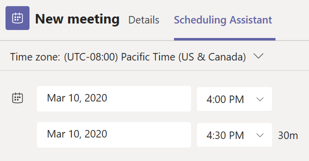

Cyber
HUB
Teams - Create Meeting
Step 1 - Select Schedule a meeting in a chat (below the box where you type a new message) to book a meeting with the people in the chat.
Step 2 - Go to Calendar Meetings button on the left side of the app and select New meeting in the top right corner.
Step 3 - Select a range of time in the calendar. A scheduling form will pop open.
The scheduling form is where you'll give your meeting a title, invite people, and add meeting details. Use the Scheduling Assistant to find a time that works for everyone.
Once you're done filling out the details, select Save. This will close the scheduling form and send an invite to everyone's Outlook inbox.

Contacts